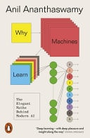

- Why Machines Learn 📚
- by
- Publication date: 2025-01-09
- Read: Jun 27, 2026

I saw this at the bookstore and was intrigued by having a book that walks through the math of neural nets and machine learning. I have a very conflicted relationship with modern AI to say the least. But ever since reading “Artificial Intelligence” I do have an appreciation for the math and theory behind it all. And so I wanted to deepen my knowledge in this area. The book does a really good job with it. I initially struggled a bit with the choices for notation. But after the first chapter got used to it and it overall didn’t detract from me enjoying the book. It’s written in a way where it allows to go deeper into the math side of things for the topics if desired but you can also stay fairly high level and read through the book with a lot of takeaways. Overall I can highly recommend it.